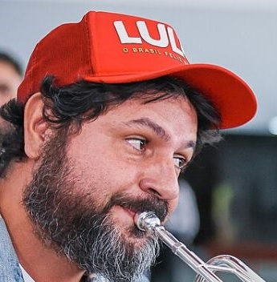
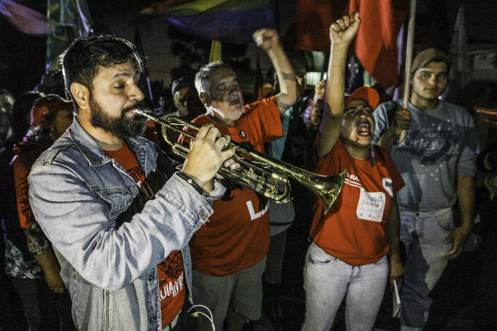
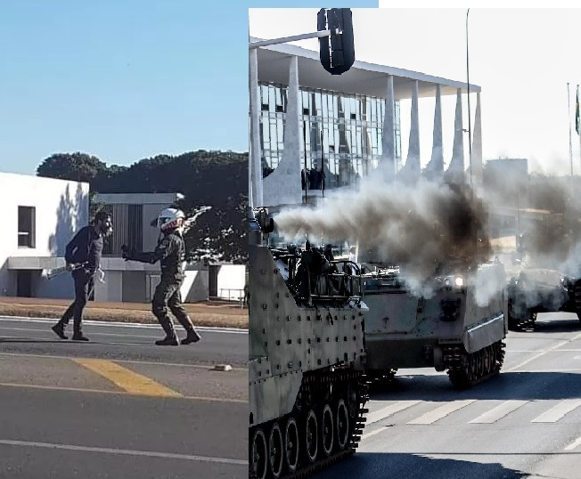
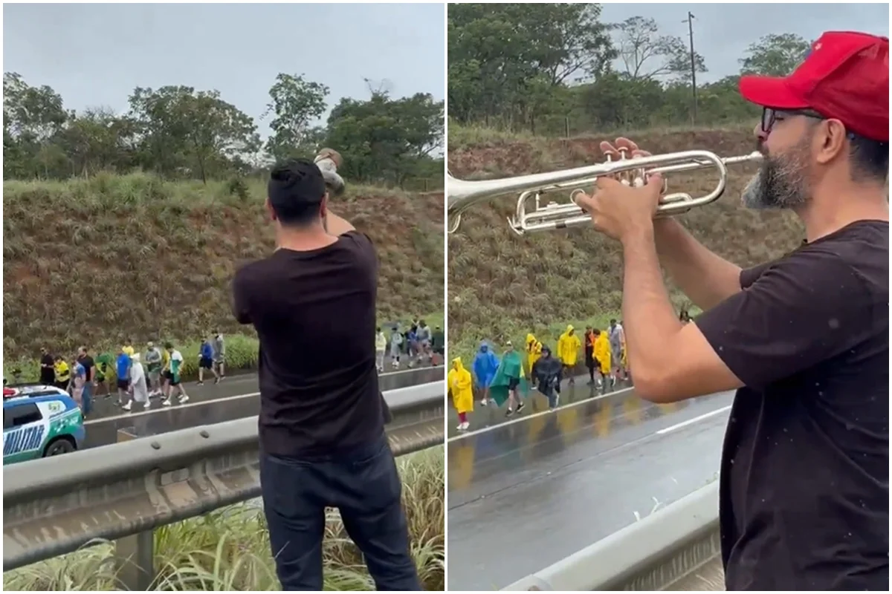
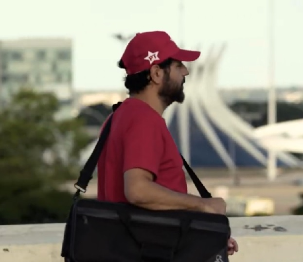

Música
A arte como forma de expressão, diálogo e mobilização.
Conheça os principais elementos de uma trajetória marcada pela presença nas ruas, pela expressão artística e pelo diálogo com a sociedade.

Filho de Dona Graça, marido da Chiquinha, pai do Dudu e do Théo. Músico, brasiliense e militante que fez do trompete uma voz em defesa da democracia, da cultura e das causas populares.
Fabiano e Silva Leitão Duarte nasceu em Brasília e construiu sua trajetória unindo música, participação popular e militância política. Militante do PT, tornou-se conhecido nacionalmente como Fabiano Trompetista — ou TromPetista —, fazendo do trompete uma voz de expressão, luta e presença cidadã em momentos marcantes da história política recente do Brasil, como a Vigília Lula Livre e atos em defesa da democracia.
Com uma caminhada reconhecida pela mídia em todo o país, Fabiano reúne a força da cultura, a energia dos movimentos sociais e a experiência de quem vive as compromissos populares. Em 2023, participou da posse de Lula e subiu a rampa do Palácio do Planalto, em um momento simbólico de sua trajetória. Agora, leva essa história de militância e participação popular para o projeto de representar o Distrito Federal como Deputado Distrital.
A arte como forma de expressão, diálogo e mobilização.
Presença em atividades públicas e compromisso com a escuta.
Defesa das instituições, do diálogo e da cidadania ativa.
Capítulos de uma atuação pública em que música, presença e posicionamento político se encontraram.
Nas ruas da capital federal, o trompete de Fabiano não apenas tocava notas, mas desafiava hegemonias. Ao ecoar ao fundo dos flashes ao vivo da TV Globo, sua música tornou-se um símbolo de protesto e apoio a Lula, confrontando diretamente a espetacularização da Lava Jato e o lawfare praticado contra o então ex-presidente.

Durante a prisão de Lula em Curitiba, Fabiano Trompetista tornou-se figura central da Vigília Lula Livre. Tocando jingles como "Lula Lá" e hinos de protesto, ele garantia suporte moral ao ex-presidente e invadia transmissões ao vivo da imprensa com seu som. A resistência criou um sólido laço de amizade com Lula — iniciado por uma carta enviada da cela — que culminou no convite para subir a rampa do Planalto na posse de 2023.

Era manhã de 10 de agosto de 2021. Em um ato heroico pela democracia, Fabiano Trompetista posicionou-se bravamente à frente dos blindados que desfilavam em Brasília para intimidar o Congresso na votação do voto impresso. Armado apenas com seu instrumento, ele enfrentou a força militar para proteger o processo eleitoral e a soberania popular. Sua resistência pacífica tornou-se um símbolo histórico de coragem em defesa das instituições democráticas do país.

Fabiano Trompetista tornou-se símbolo dos "lulaços" e manifestações populares no Brasil ao usar a música como protesto. Em atos públicos, seu trompete puxava coros de "Lula Lá" e canções de resistência. Ele também marcou presença ao ironizar a caminhada do deputado Nikolas Ferreira tocando berrante do alto de um morro, consolidando suas performances como assinatura sonora da militância.
Fabiano Trompetista consagrou-se como destaque do Carnaval do Rio em 2026, abrindo o desfile da Acadêmicos de Niterói em homenagem a Lula. O músico também marcou presença tocando a Marcha Fúnebre para Jair Bolsonaro diante de seus desdobramentos judiciais. Além disso, protestou na residência do senador Flávio Bolsonaro executando a mesma marcha e a canção “Amigo”, de Roberto Carlos, após polêmicas com áudios vazados. Sátira inteligente e militância.

Agora, Fabiano parte para o maior e mais ousado desafio de sua jornada: levar a força das ruas para a disputa de uma vaga na Câmara Legislativa do DF! Depois de fazer de seu trompete um verdadeiro escudo da democracia e dar tom à esperança popular, ele transforma o eco das praças em coragem política. Fabiano quer levar para a política institucional a mesma paixão, altivez e destemor que sempre moveram sua militância. É a voz e a alma do povo prontos para ressoar, com ainda mais garra, no plenário do Distrito Federal!
Registros de diferentes momentos da atuação pública de Fabiano Trompetista.
Prioridades para um mandato participativo, presente e conectado às necessidades da população.
Ninguém deveria lucrar com a fome. Precisamos de comida de qualidade e barata no prato da população, como já tivemos com as SABs - o supermercado público pode e deve voltar, garantindo uma política perene que mantenha o DF fora do Mapa da Fome.
Em diversos lugares do mundo já estão colocando em prática a ideia de um local público para venda e distribuição de alimentos. Recentemente, Nova Iorque abriu mercados públicos que vendem produtos cerca de 30% mais baratos.
O descaso com a saúde pública no DF está evidenciado nas diversas mortes por negligência médica e falta de agilidade no atendimento à população. Em cerca de 30 dias, entre os meses de junho e julho de 2026, o Distrito Federal registrou 7 mortes evitáveis dentro de suas dependências de saúde. Pacientes internados em cadeiras de rodas pelos corredores, falta de medicamentos essenciais, estrutura precária e protocolos ultrapassados - o diagnóstico da saúde no DF é de caos total.
Conheça e participeA Escola de Música de Brasília mudou minha vida e a de tantos outros jovens que, por meio de um instrumento musical, acabaram tendo um ofício e ganhando um novo destino. Precisamos ampliar a oferta do ensino musical acabando com a necessidade do sorteio que tira a oportunidade de muitos jovens e também descentralizando a Escola, ampliando-a para além do Plano Piloto. O que foi feito com a UnB pelo Reuni, pode ser feito pela EMB.
Conheça e participeEscolas militarizadas tendem a desincentivar o pensamento crítico, focando em padrões rígidos de comportamento, retirando a autonomia e afastando a comunidade escolar. Precisamos de menos escolas militarizadas e mais escolas com incentivo à produção cultural. O incentivo às atividades culturais melhora o desempenho escolar, diminui a evasão, estimula a criatividade e ajuda a descobrir novos talentos.
Conheça e participeA Fundação Getúlio Vargas fez um levantamento de que a cada 1 real de renúncia fiscal investido na Lei Rouanet, são 7,59 reais injetados na economia brasileira. Cultura não é tão somente entretenimento, é um motor essencial para o crescimento nacional pois gera emprego, movimenta a economia e fortalece a imagem nacional aqui e para o mundo.
Conheça e participeSua ideia pode virar compromisso
Proponha uma PautaReportagens e vídeos que ajudam a documentar diferentes momentos da atuação pública de Fabiano Trompetista.
Acompanhe os próximos encontros, caminhadas e rodas de conversa da campanha.
Participar da campanhaBaixe materiais digitais e ajude a compartilhar a campanha.
Fabiano Trompetista e Lula já estão preenchidos. Complete os demais cargos com os nomes e números de sua preferência e imprima sua cola.
A impressão contém somente a cola eleitoral preenchida. Os campos pré-preenchidos de Fabiano Trompetista (13007) e Lula (13) são preservados ao usar “Limpar campos”.
Participe, compartilhe e ajude a construir uma campanha presente em todo o Distrito Federal.